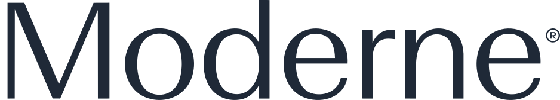
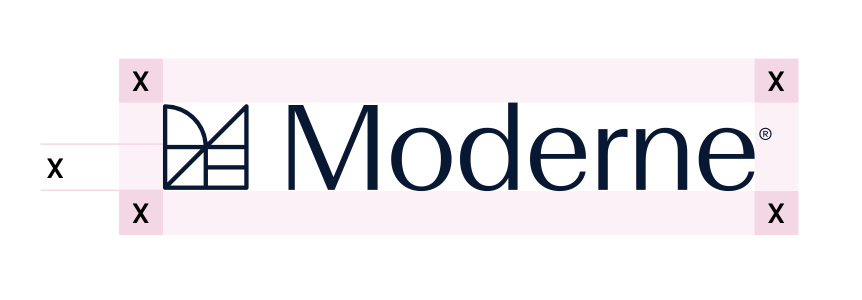
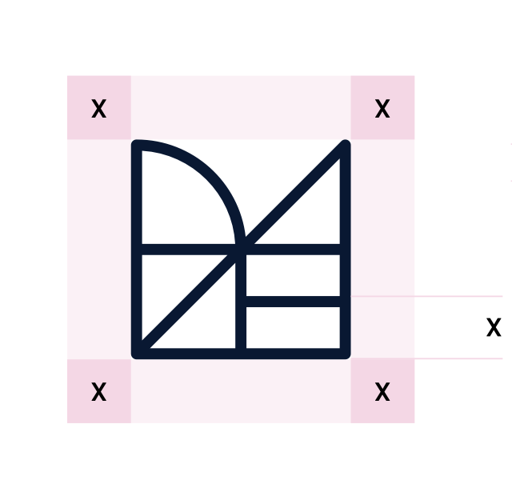
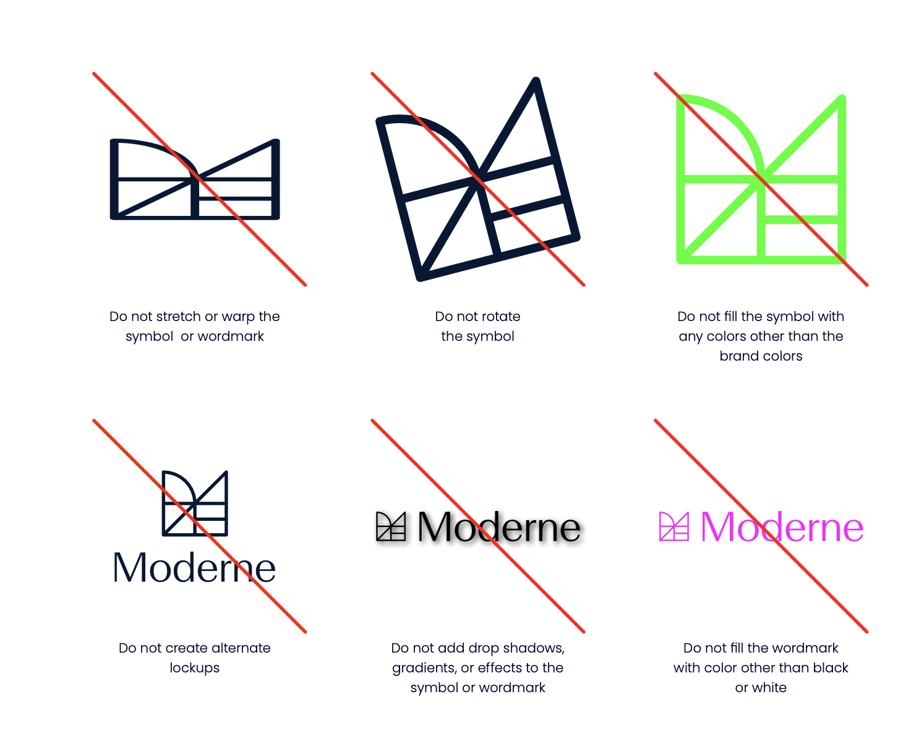

Brand guidelines
The Moderne logo is the primary visual identifier of our brand. These guidelines ensure it's used consistently across all touchpoints — variants, clear space, sizing, and the assets to download.
Logo variants
full · symbol · wordmarkModerne has three logo variants. Use the right one for the context.
Full logo
The primary logo — icon mark + wordmark. Use this as the default wherever space allows. The lockup sets the wordmark in Beausite, a modern humanist sans serif that keeps the logotype approachable.
Symbol
The shorthand signifier of the brand — shapes coming together as the building blocks of code. Use when space is constrained (favicons, app icons, small UI) or the brand is already established in context.

Wordmark only
Use when the icon mark would be redundant — for example alongside the icon in a header — or for editorial contexts.
Color variations
default · invertedDefault (dark)
For use on light backgrounds.

White (inverted)
For use on dark or colored backgrounds.
Product lockups
Moderne + product nameProduct names extend the Moderne lockup, set in Poppins at the cap height of the icon mark with a clear gap. On dark backgrounds the name matches the white logo; on light backgrounds it sets in slate #99A3B0 beside the Midnight logo. Always use the provided lockup files — never redraw or restyle them.
On dark
White logo and product name on Midnight or dark backgrounds.
On light
Midnight logo with the product name in slate on light backgrounds.
Documentation — on dark
Documentation — on light
Clear space
minimum = X (icon height)The clear space around the logo ensures it's never crowded by other elements. The minimum clear space is defined by the height of the icon mark, referred to as "X".


Minimum size
digital · printTo maintain legibility, the logo should never appear smaller than:
| Variant | Digital | |
|---|---|---|
| Full logo | 120px wide | 40mm wide |
| Icon only | 24px | 8mm |
| Wordmark | 80px wide | 28mm wide |
Sizing
24 / 32 / 48Placement in UI
header · faviconDownloads
logo · lockups · motion · fonts{kind=link}
{kind=link}
{kind=link}
{kind=link}
{kind=link}
{kind=link}
Incorrect uses
don'tsAvoid the following incorrect usages of the logo in order to maintain consistency and clarity across the brand.

- Do not stretch, rotate, or distort the logo
- Do not change the logo colors beyond the provided variants
- Do not add effects (shadows, gradients, outlines)
- Do not place the logo on busy backgrounds without sufficient contrast
- Do not rearrange the icon mark and wordmark
- Do not recreate the logo — always use the provided files